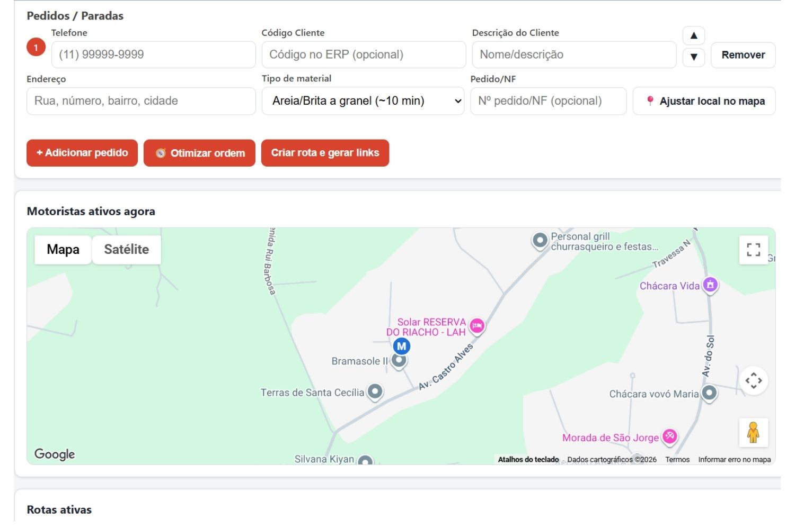
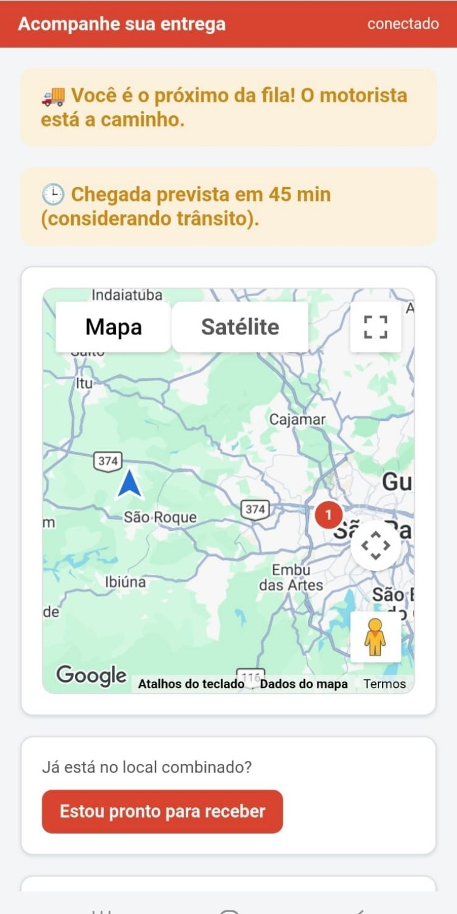
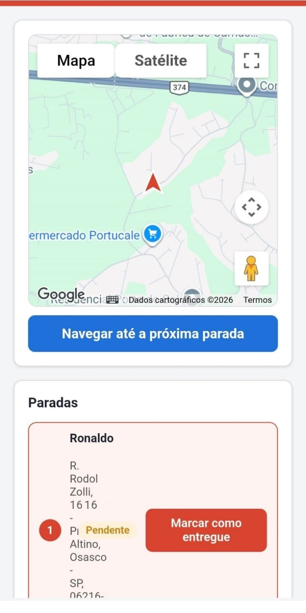
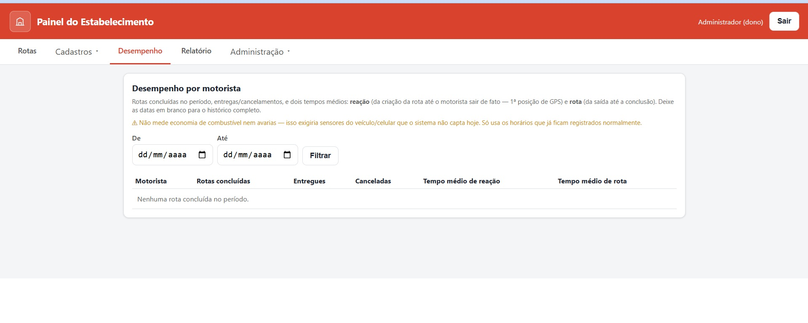

O roteirizador que acaba com motorista perdido, cliente ligando toda hora e ERP desatualizado
O RotaCerta foi criado para depósitos de material de construção e transportadoras de pequeno e médio porte — não para entrega de encomenda urbana. Geolocalização de obra sem endereço formal, tempo de descarga calculado pelo tipo de material, rastreamento em tempo real por link e integração automática com o ERP que a sua empresa já usa.
Se a sua operação vive algum desses cenários, o RotaCerta resolve
Depósitos de material de construção e transportadoras de pequeno e médio porte não são bem atendidos por roteirizadores genéricos, feitos para entrega de encomenda em endereço urbano.
Motorista perdido em obra ou loteamento sem CEP nem número definido.
Cliente ligando toda hora perguntando "cadê minha carga".
Tempo de descarga igual pra qualquer material — areia, cimento ou esquadria.
Roteiro feito na mão ou no grupo do WhatsApp, sem otimização nenhuma.
Carga aberta pegando chuva porque ninguém reorganizou a rota a tempo.
Escritório digitando de novo no ERP o que o motorista já entregou.
Da criação da rota até o relatório de desempenho
Quatro telas do RotaCerta que mostram a jornada completa: operador, cliente, motorista e gestão.

Painel do Operador: da nota fiscal ao mapa em segundos
Cada parada é cadastrada com telefone, endereço, código do cliente no ERP e tipo de material — é esse dado que define o tempo de descarga calculado automaticamente pelo sistema. Com um clique em "Otimizar ordem", o RotaCerta reorganiza a sequência de entregas; com "Criar rota e gerar links", os links de acompanhamento saem prontos para motorista e cliente.
Logo abaixo, o mapa "Motoristas ativos agora" mostra toda a frota em tempo real, sem precisar abrir tela por tela.
- Tempo de descarga calculado pelo tipo de material
- Otimização de rota com um clique
- Mapa com toda a frota ativa, em tempo real

O cliente acompanha a entrega por um link, sem instalar nada
Assim que o caminhão sai, o cliente recebe um link individual da entrega — sem senha e sem cadastro. A tela mostra a posição na fila ("Você é o próximo!"), a previsão de chegada já considerando o trânsito da rota, e um mapa ao vivo com o caminhão se aproximando.
Quando o material está prestes a chegar, um botão único — "Estou pronto para receber" — avisa o motorista que a obra está preparada para a descarga.
- Link individual por entrega, sem app nem senha
- Previsão de chegada considerando o trânsito
- Botão "Descarregue aqui" avisa o motorista na hora

O motorista navega até o pino exato da obra
Direto no navegador do celular, sem instalar aplicativo: o motorista toca em "Navegar até a próxima parada" e é guiado até o ponto marcado no mapa — mesmo quando a obra não tem endereço formal. A lista de paradas fica sempre visível, com o status de cada entrega.
Ao chegar e descarregar, basta tocar em "Marcar como entregue" — o status muda na hora, tanto para o cliente quanto para o painel do operador.
- Navegação direto no navegador, sem instalar app
- Rota com múltiplas paradas, na ordem definida
- Confirmação de entrega em um toque

Relatório de desempenho por motorista, sem hardware extra
No Painel do Estabelecimento, a aba Desempenho reúne, por motorista e por período, as rotas concluídas, entregas e cancelamentos, o tempo médio de reação (da criação da rota até o motorista sair de fato) e o tempo médio de rota (da saída até a conclusão).
Tudo calculado a partir de dados que o sistema já registra normalmente — sem depender de sensores de veículo ou hardware proprietário.
- Rotas concluídas, entregues e canceladas por motorista
- Tempo médio de reação e tempo médio de rota
- Filtro por período, sem custo com hardware extra
Demonstração completa no nosso canal do YouTube
Veja o RotaCerta Roteirizador do início ao fim — do cadastro da rota até a confirmação de entrega — direto do canal da Sigacerto Technology.
6 inovações que sustentam o RotaCerta
Cada tela que você viu acima é a ponta visível dessas inovações.
Geolocalização de obra sem endereço formal
Pino salvo no mapa para a próxima entrega no mesmo lugar.
Tempo de descarga por tipo de material
Cálculo automático a partir dos itens da nota fiscal.
WhatsApp com "Descarregue aqui"
Cliente avisado e rota recalculada sem parar a operação.
Roteirização preditiva por trânsito e clima
Cargas abertas priorizadas quando há previsão de chuva.
Barramento nativo com o seu ERP
Nota fiscal vira rota e entrega concluída atualiza o ERP sozinho.
Gamificação e telemetria leve
Relatório de desempenho por motorista, sem hardware extra.
Roteirizador genérico vs. RotaCerta
Roteirizador genérico
- Motorista perdido em obra sem endereço formal
- Tempo de parada igual para qualquer carga
- Cliente sem saber quando o material chega
- Carga aberta pega chuva porque a rota não muda
- Escritório exportando planilha para o ERP
- Nenhuma visibilidade sobre a frota
Com RotaCerta
- Pino exato da obra, salvo para a próxima entrega
- Tempo de descarga calculado pelo tipo de material
- Cliente recebe WhatsApp e confirma "descarregue aqui"
- Rota se reorganiza sozinha antes da chuva chegar
- ERP atualizado automaticamente, sem digitação
- Motorista pontuado por pontualidade e economia
Ainda com dúvidas sobre o RotaCerta?
Preciso trocar de ERP para usar o RotaCerta?
Não. O RotaCerta se conecta ao ERP que a sua empresa já usa — TOTVS Protheus, WinThor, Conta Azul, Bling, Tiny, Senior, Saurus e outros — via Webhooks e REST API. A nota fiscal emitida já cai na fila de roteirização, e a entrega concluída atualiza o ERP sozinha.
O motorista precisa instalar algum aplicativo?
Não. Tudo roda direto no navegador do celular, tanto para o motorista quanto para o cliente que acompanha a entrega — sem instalar nada e sem senha.
Funciona para obras sem endereço ou CEP definido?
Sim. O RotaCerta usa geolocalização por ponto de referência: o pino é marcado direto no mapa — "portão lateral do Lote 12" — e fica salvo para as próximas entregas no mesmo lugar.
Preciso instalar rastreador ou hardware no caminhão?
Não. O rastreamento usa apenas o GPS do smartphone do motorista, sem custo com hardware proprietário — inclusive o relatório de desempenho por motorista é gerado só com esses dados.
Quanto custa o RotaCerta?
O investimento depende do tamanho da frota e da complexidade da integração com o seu ERP. Fale com um consultor: em uma conversa rápida entendemos a sua operação e apresentamos uma proposta sob medida.
Funciona para transportadoras pequenas, com poucos caminhões?
Sim. O RotaCerta atende desde pequenas transportadoras e depósitos até operações de médio porte com múltiplos veículos.
Quanto tempo leva para implantar?
Depende da integração necessária com o seu ERP. O diagnóstico inicial com um consultor já deixa claro o prazo estimado para colocar a sua frota rodando no RotaCerta.
Leve o RotaCerta para o seu depósito ou transportadora
Preencha o formulário ou fale agora pelo WhatsApp — um consultor entende a sua operação e mostra como o RotaCerta se encaixa no seu ERP.
Solicitar contato
Um consultor entra em contato para apresentar o RotaCerta para a sua operação.
Fale agora pelo WhatsApp
Conte como funciona a sua operação hoje e veja como o RotaCerta se encaixa no seu ERP.
Iniciar conversaHorário de atendimento
Segunda a sexta, das 9h às 18h